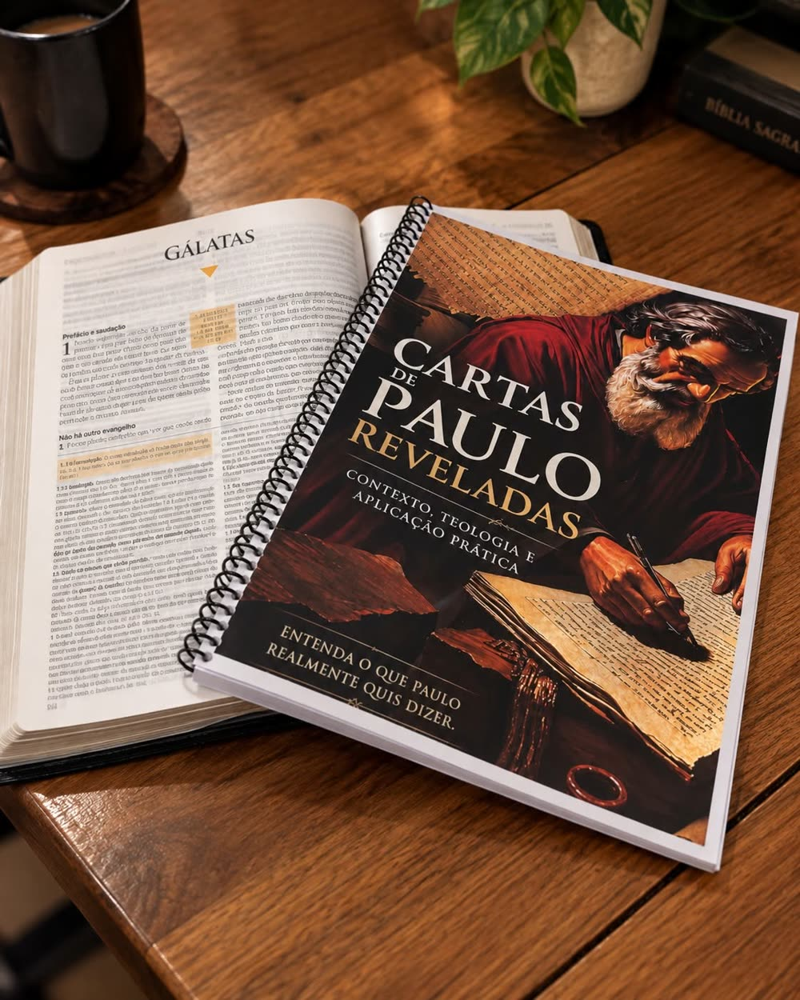
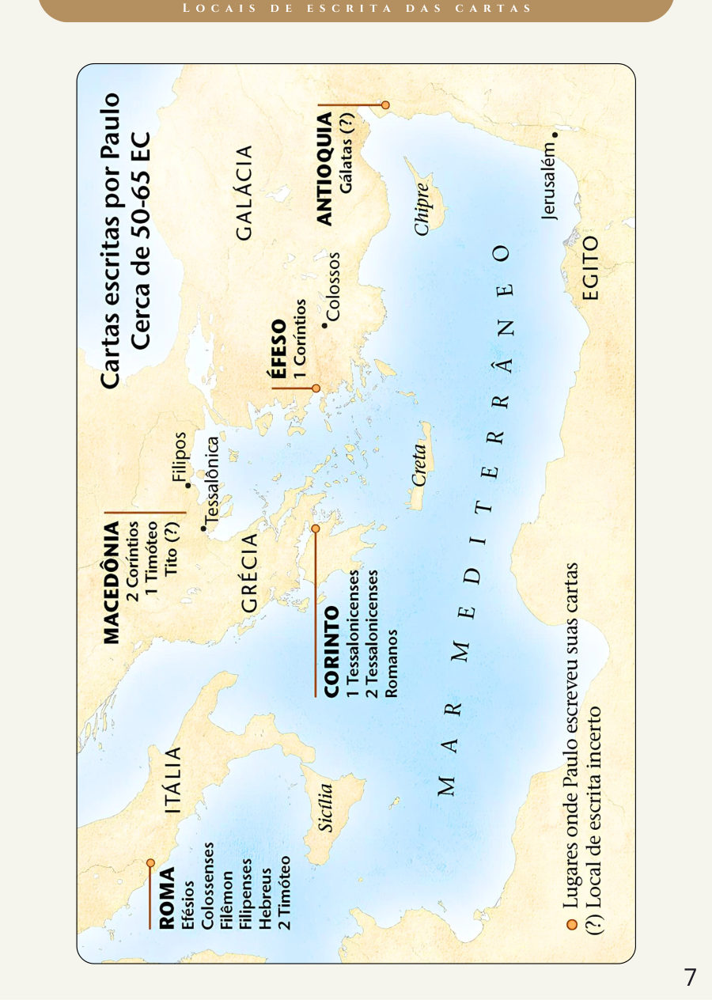
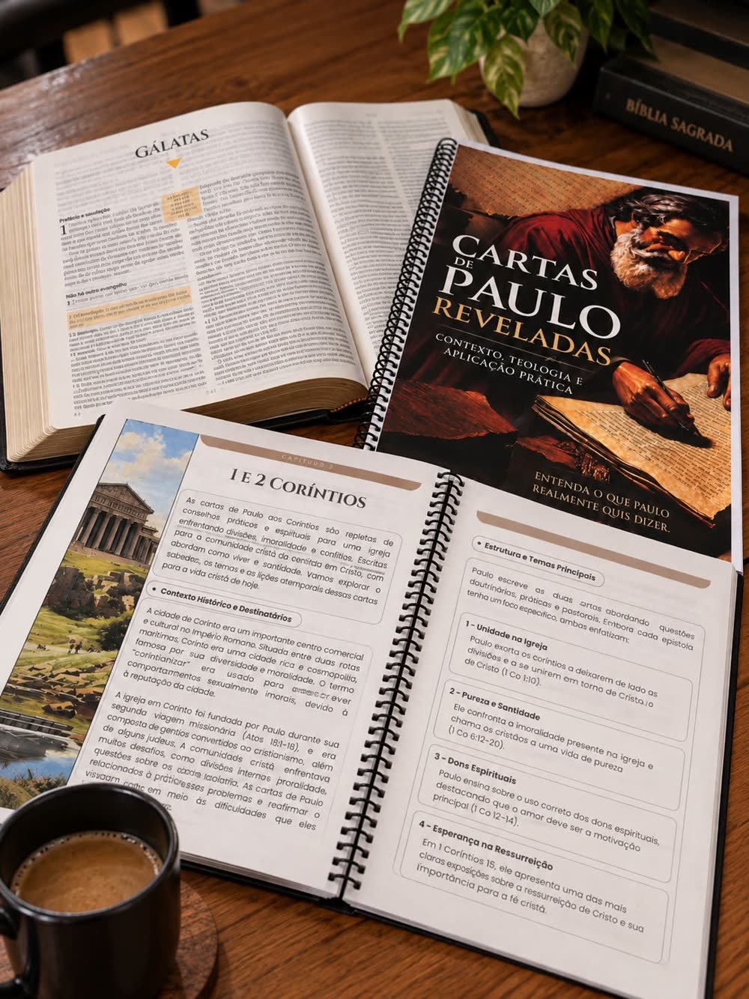
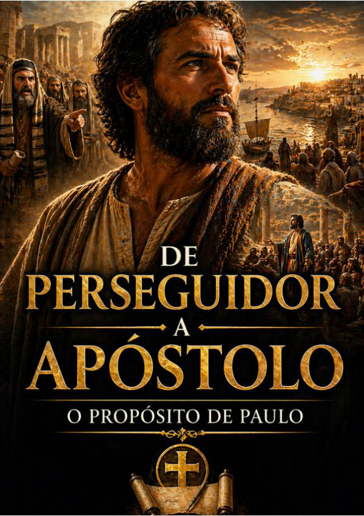

Estudo bíblico completo
Entenda as Cartas de Paulo, carta por carta
Contexto, explicação simples e aplicação para a sua vida, mesmo que você nunca tenha estudado teologia.
- 📖 Estudo de 63 páginas, de Romanos a Filemom
- 🎧 Audiobook completo de 42 minutos
- 🗺️ Mapa, linha do tempo e checklist das lições

Você já leu uma carta de Paulo e não entendeu tudo?
Se isso já aconteceu com você, fique tranquilo: não é só com você. As cartas de Paulo são cheias de sabedoria, mas foram escritas há quase dois mil anos, para igrejas com costumes e problemas muito diferentes dos nossos.
“…nas quais há pontos difíceis de entender…”
O apóstolo Pedro, sobre as cartas de Paulo — 2 Pedro 3:16
Até o apóstolo Pedro reconheceu isso. Essas cartas pedem contexto, explicação e um pouco mais de cuidado na hora de estudar. É exatamente isso que este estudo oferece.
Um guia completo, simples de acompanhar
Sem perder a profundidade da Palavra.
Contexto de cada igreja
Para quem Paulo escrevia, em que cidade e que problemas aquela igreja enfrentava.
Explicação clara
O que Paulo realmente quis ensinar, com linguagem simples e base bíblica.
Aplicação na vida
Como viver cada ensinamento no seu dia a dia e na sua caminhada com Deus.
Para ler ou ouvir
Leia no celular ou no computador, ou ouça o audiobook enquanto faz suas tarefas.
O que você vai estudar, carta por carta
- Romanos — a salvação pela graça, por meio da fé.
- 1 e 2 Coríntios — as divisões na igreja, os dons espirituais e o amor.
- Gálatas — a liberdade em Cristo diante do legalismo.
- Efésios — a igreja como corpo de Cristo e a armadura de Deus.
- Filipenses — a alegria, mesmo em meio às provações.
- Colossenses — a supremacia de Cristo sobre todas as coisas.
- 1 e 2 Tessalonicenses — a esperança na volta de Cristo.
- 1 e 2 Timóteo — os conselhos de Paulo a um jovem líder.
- Tito — a boa conduta e a liderança na igreja.
- Filemom — perdão e reconciliação na prática.
E mais: mapa dos locais onde as cartas foram escritas, cronologia das cartas e um checklist com as lições de cada uma.
Veja por dentro
Algumas páginas do estudo. O material é digital: você lê no celular ou no computador.



Grátis
Comece conhecendo a vida de Paulo
O estudo “De Perseguidor a Apóstolo” conta como Saulo, o perseguidor, se tornou Paulo, o apóstolo: a conversão no caminho de Damasco, as viagens missionárias, a prisão em Roma e o legado que ele deixou. São 57 páginas, com mapa das viagens.
É a melhor porta de entrada para as cartas: você entende quem as escreveu e por quê.
Ler o estudo grátisBasta digitar seu e-mail. Não pedimos senha nem cartão.
Este estudo é para você que…
- quer entender a Bíblia com mais segurança;
- já leu as cartas de Paulo e ficou com dúvidas;
- quer se preparar melhor para a escola bíblica, células ou pregações;
- prefere um material simples, sem linguagem difícil;
- gosta de ouvir enquanto faz outras coisas.
Cartas de Paulo Reveladas
Você recebe:
- Estudo completo de 63 páginas, carta por carta
- Audiobook de 42 minutos
- Mapa, cronologia e checklist das lições
- Acesso pelo celular ou computador
R$9,90
pagamento único · Pix ou cartão
Quero o estudo agora- 🔒 Pagamento seguro pela Cakto
- ⚡ Acesso liberado logo após o pagamento
- ↩️ 7 dias para pedir reembolso, garantido pelo Código de Defesa do Consumidor
Mais vantajoso
Todos os 4 estudos
Cartas de Paulo (com audiobook), Davi, Neemias e José, para estudar no seu ritmo.
R$ 39,60 R$ 27,90
pagamento único · você economiza R$ 11,70
Quero todos os estudosOutros estudos do clube
Cada um por R$ 9,90, ou todos juntos no combo acima.
Perguntas frequentes
Como eu recebo o estudo?
Assim que o pagamento é confirmado, você recebe o link de acesso. Para entrar, é só digitar o mesmo e-mail que usou na compra. Não precisa de senha.
Funciona no celular?
Sim. Você lê e ouve pelo celular, tablet ou computador, direto no navegador, sem instalar nada.
Preciso saber teologia?
Não. O estudo foi feito para quem quer entender a Bíblia com linguagem simples, mesmo sem nunca ter estudado teologia.
O audiobook está incluído?
Sim. O audiobook de 42 minutos vem junto com o estudo, sem custo extra.
Posso pagar com Pix?
Sim. Na página de pagamento aparecem as formas disponíveis, como Pix e cartão.
E se eu não gostar?
Você tem 7 dias, a partir da compra, para pedir o reembolso, como garante o Código de Defesa do Consumidor.
Já comprei. Como entro?
Clique em Entrar, no topo da página, e digite o e-mail usado na compra.
Entenda o que Paulo realmente quis dizer
Estudo completo das Cartas de Paulo, com audiobook, por apenas R$ 9,90.
Quero o estudo por R$ 9,90